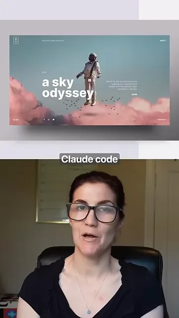
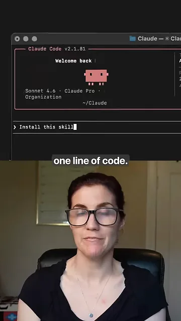
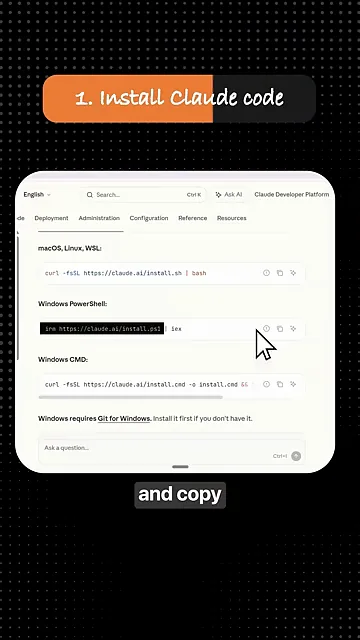
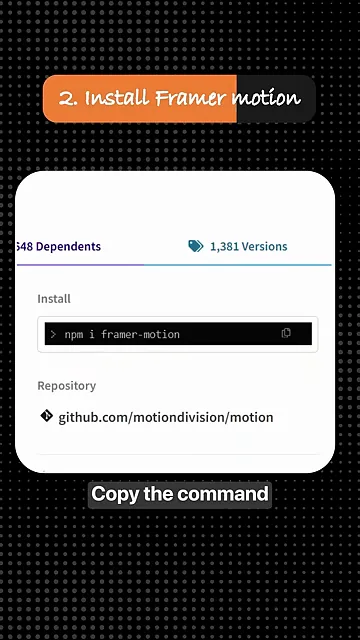
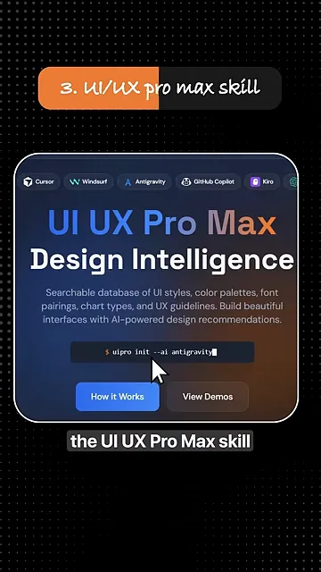
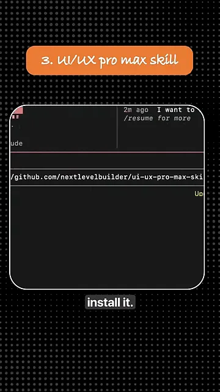
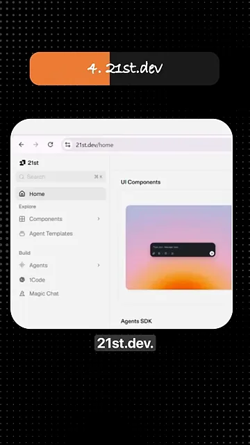
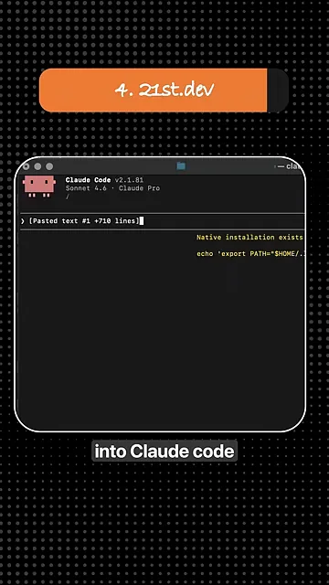
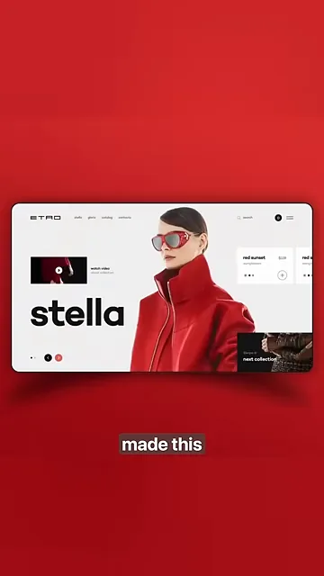

어떤 주장을 하나요?
영상은 '웹 디자이너를 고용하지 말라'는 말로 시작해요. 그러면서 Claude Code가 만들었다는 사이트를 먼저 보여 줘요. 분홍 구름 위에 우주인이 떠 있고, 왼쪽에 큰 글씨로 'a sky odyssey'라고 적힌 첫 화면이에요.

제목의 '코드 한 줄'이 무엇인지는 다음 화면에서 드러나요. Claude Code 터미널의 입력 줄에 Install this skill이라는 한 문장만 쳐 있어요. 코드라기보다 Claude Code에게 자연어로 시키는 한 줄이에요. 상단에는 Claude Code v2.1.81, 모델은 Sonnet 4.6이라고 찍혀 있어요.

네 단계 따라 하기
영상은 화면 위에 주황색 띠로 '1. Install Claude code'처럼 단계 번호를 붙여 가며 네 단계를 빠르게 넘겨요. 한 장씩 따로 나오기 때문에, 전체 흐름을 먼저 한 그림으로 모았어요.
flowchart LR A["1. Claude Code 설치"] --> B["2. Framer Motion 설치"] --> C["3. UI UX Pro Max 스킬"] --> D["4. 21st.dev 내용 붙여 넣기"] --> E["웹사이트"]
1. Claude Code 설치
공식 설치 문서에서 운영체제별 명령을 고르는 장면이에요. 맨 위 macOS, Linux, WSL(Windows Subsystem for Linux) 칸에는 curl -fsSL https://claude.ai/install.sh | bash가 있고, 그 아래로 Windows PowerShell과 Windows CMD(Command Prompt)용 명령이 따로 있어요. 커서는 PowerShell 줄의 복사 버튼 쪽에 있어요.

curl -fsSL https://claude.ai/install.sh | bash2. Framer Motion 설치
두 번째는 애니메이션을 맡는 Framer Motion이에요. 패키지 페이지의 Install 칸에 있는 npm i framer-motion을 복사해요. 바로 아래 Repository 칸에는 github.com/motiondivision/motion이 적혀 있어요.

3. UI UX Pro Max 스킬
세 번째로 UI UX Pro Max 소개 사이트를 보여 줘요. 'Design Intelligence'라는 제목 아래, UI 스타일·색 조합·폰트 짝·차트 종류·UX 지침을 검색할 수 있는 데이터베이스라고 적혀 있어요. 맨 위에는 Cursor, Windsurf, Antigravity, GitHub Copilot, Kiro 같은 지원 도구 로고가 줄지어 있고, 가운데 명령 칸에는 uipro init --ai antigravity가 보여요.

실제 설치는 Claude Code 안에서 해요. 입력 줄에 GitHub 주소 github.com/nextlevelbuilder/ui-ux-pro-max-skill을 주고 설치해 달라고 시키는 장면이에요.

4. 21st.dev 내용 붙여 넣기
마지막은 21st.dev예요. 왼쪽 메뉴에 Components, Agent Templates, Agents, Magic Chat 같은 항목이 있고, 오른쪽에는 UI Components 미리보기가 떠 있어요.

복사한 내용을 Claude Code에 붙여 넣은 화면이에요. 입력 줄에 [Pasted text #1 +710 lines]라고 찍혀 있어요. 영상은 '한 줄을 복사하라'고 말하지만, 실제로 들어간 건 710줄짜리 텍스트예요.

만들어진 사이트와 빠진 것
네 단계를 거치면 이런 사이트가 나온다며 결과물 두 개를 보여 줘요. 첫 번째는 초원 위 코끼리 사진을 화면 가득 깔고 'SAFARI'라는 큰 글자를 얹은 여행 사이트예요.
두 번째는 빨간 재킷과 선글라스를 쓴 모델을 오른쪽에 두고, 왼쪽에 'stella'라는 굵은 글자를 놓은 패션 사이트예요. 오른쪽 아래에는 'next collection' 카드가 붙어 있어요.

영상에 빠진 것도 짚어 둘게요. 사이트를 만들 때 Claude Code에게 어떤 지시를 줬는지, 몇 번 고쳤는지, 얼마나 걸렸는지는 나오지 않아요. '1만 달러'도 값을 매긴 근거 없이 붙인 표현이에요. 그래서 이 영상은 만드는 법이라기보다, 어떤 도구를 조합하는지 알려 주는 목록으로 보는 게 맞아요.
| 단계 | 도구 | 맡는 일 | 어떻게 넣나요 |
|---|---|---|---|
| 1 | Claude Code | 코드를 실제로 짜는 AI(Artificial Intelligence) 코딩 도구 | 터미널에 설치 명령 |
| 2 | Framer Motion | 애니메이션 | 터미널에 설치 명령 |
| 3 | UI UX Pro Max | 색·폰트·스타일 같은 디자인 지식 | Claude Code에게 설치 지시 |
| 4 | 21st.dev | 완성된 UI 컴포넌트 | 복사해서 Claude Code에 붙여 넣기 |